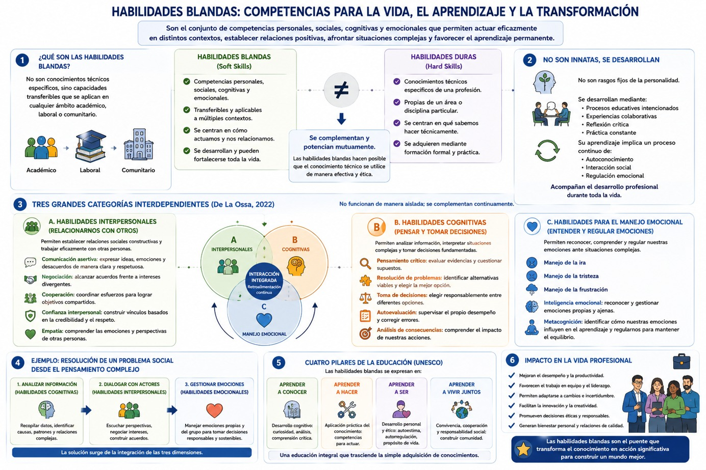
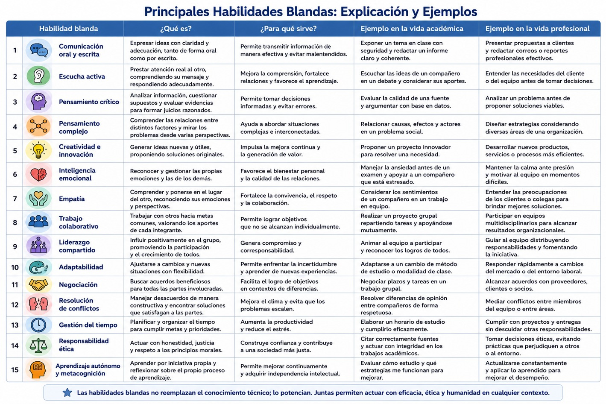
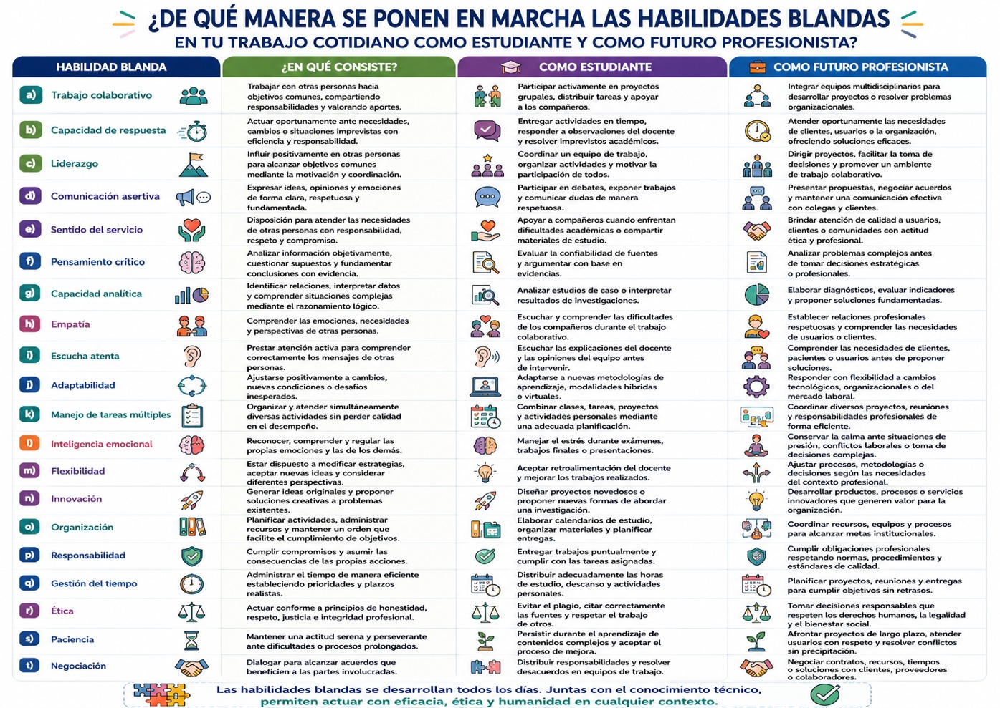

En las últimas décadas, el concepto de habilidades blandas (soft skills) ha adquirido una importancia creciente en la educación superior, el mundo laboral y la formación profesional. Mientras que tradicionalmente las universidades concentraban sus esfuerzos en el desarrollo de conocimientos técnicos o disciplinares, hoy existe un amplio consenso en que el éxito profesional depende también de un conjunto de competencias personales, sociales, cognitivas y emocionales que permiten a las personas interactuar eficazmente con los demás, adaptarse a contextos cambiantes y resolver problemas complejos. Las organizaciones internacionales, los empleadores y las instituciones educativas coinciden en que las habilidades blandas constituyen un componente indispensable de la formación integral de las y los profesionistas del siglo XXI.
Aunque el término comenzó a difundirse ampliamente durante la década de 1970, sus antecedentes son mucho más antiguos. Jaime De La Ossa (2022), señala que el reconocimiento oficial del concepto ocurrió en 1972, cuando el ejército de los Estados Unidos observó que el desempeño de sus mejores tropas no dependía únicamente del dominio técnico de equipos y armamento, sino también de capacidades transversales como la comunicación, el liderazgo, el trabajo en equipo, la responsabilidad y la resolución de conflictos. No obstante, el autor muestra que estas competencias ya habían sido abordadas desde la filosofía clásica y posteriormente por autores como Edward Thorndike, con su concepto de inteligencia social, y David Wechsler, quien destacó la importancia de factores no intelectivos en el comportamiento inteligente.
En la actualidad, las habilidades blandas pueden definirse como el conjunto de competencias personales, sociales, cognitivas y emocionales que permiten actuar eficazmente en distintos contextos, establecer relaciones interpersonales positivas, afrontar situaciones complejas y favorecer el aprendizaje permanente. Se diferencian de las habilidades duras porque no corresponden a conocimientos técnicos específicos de una profesión, sino a capacidades transferibles que pueden aplicarse en cualquier ámbito académico, laboral o comunitario. Estas habilidades no sustituyen al conocimiento disciplinario; por el contrario, lo complementan y potencian, haciendo posible que las competencias técnicas puedan utilizarse de manera efectiva y ética.
Desde esta perspectiva, las habilidades blandas no deben entenderse como cualidades innatas o rasgos fijos de la personalidad. Constituyen competencias que pueden desarrollarse mediante procesos educativos intencionados, experiencias colaborativas, reflexión crítica y práctica constante. Su aprendizaje implica un proceso continuo de autoconocimiento, interacción social y regulación emocional que acompaña el desarrollo profesional durante toda la vida.
Uno de los principales aportes del trabajo de De La Ossa (2022) consiste en señalar que las habilidades blandas pueden agruparse en tres grandes categorías interdependientes: habilidades interpersonales, habilidades cognitivas y habilidades para el manejo emocional. Estas dimensiones no funcionan de manera aislada; se complementan continuamente durante la toma de decisiones, la resolución de problemas y la interacción con otras personas. Veamos cada una de ellas:
Las habilidades interpersonales hacen posible que establezcas relaciones sociales constructivas y trabajes eficazmente con otras personas. Comprenden competencias como la comunicación asertiva, la negociación, la cooperación, la confianza interpersonal y la empatía. La comunicación asertiva te permite expresar ideas, emociones y desacuerdos de manera clara y respetuosa, favoreciendo el diálogo y la resolución de conflictos. La negociación te facilita alcanzar acuerdos frente a intereses divergentes, mientras que la cooperación permite coordinar esfuerzos para lograr objetivos compartidos. Por su parte, la empatía te posibilita comprender las emociones y perspectivas de otras personas, fortaleciendo el trabajo colaborativo y la convivencia.
Las habilidades cognitivas constituyen el segundo gran componente. Estas competencias te permiten analizar información, interpretar situaciones complejas y tomar decisiones fundamentadas. Entre ellas destacan el pensamiento crítico, la resolución de problemas, la toma de decisiones, la autoevaluación y la capacidad para analizar las consecuencias de las acciones. El pensamiento crítico favorece la evaluación de evidencias y el cuestionamiento de supuestos; la resolución de problemas te permite identificar alternativas viables; la autoevaluación facilita supervisar el propio desempeño y corregir errores; mientras que la comprensión de las consecuencias promueve decisiones responsables y éticamente fundamentadas.
Las habilidades para el manejo emocional hacen referencia a la capacidad para reconocer, comprender y regular las propias emociones frente a situaciones de incertidumbre, presión o conflicto. Incluyen el manejo de la ira, la tristeza, la frustración y otras emociones que pueden afectar el desempeño académico o profesional. Estas competencias guardan una estrecha relación con la inteligencia emocional y la metacognición, ya que permiten al estudiante identificar cómo sus estados emocionales influyen en su aprendizaje y aplicar estrategias conscientes para mantener el equilibrio durante la realización de tareas complejas.
Por ejemplo, desde el enfoque del pensamiento complejo, estas tres dimensiones no pueden separarse. Resolver un problema social implica analizar información (habilidades cognitivas), dialogar con distintos actores (habilidades interpersonales) y gestionar adecuadamente las emociones que acompañan el proceso (habilidades emocionales). Por ello, las habilidades blandas constituyen un sistema integrado en el que cada competencia influye sobre las demás mediante procesos continuos de retroalimentación.
Esta visión coincide con los cuatro pilares de la educación propuestos por la UNESCO. De La Ossa señala que las habilidades blandas pueden organizarse en cuatro dimensiones complementarias: aprender a conocer, relacionado con el desarrollo cognitivo; aprender a hacer, vinculado con la aplicación práctica del conocimiento; aprender a ser, orientado al desarrollo personal y ético; y aprender a vivir juntos, centrado en la convivencia, la cooperación y la responsabilidad social. Estas dimensiones sintetizan una concepción de la educación que trasciende la simple adquisición de conocimientos para promover el desarrollo integral de la persona. Observa el siguiente gráfico:

En nuestro contexto universitario, las habilidades blandas adquieren una importancia estratégica pues ahora puedes comprender que tu formación profesional ya no consiste únicamente en transmitirte contenidos disciplinares, sino en prepararte como una o un profesionista capaz de enfrentar escenarios caracterizados por la incertidumbre, la innovación y el trabajo interdisciplinario. Todo esto, porque como hemos visto, los retos sociales demandan profesionistas que, además de dominar conocimientos técnicos, puedan liderar equipos, comunicarse eficazmente, adaptarse a cambios constantes, aprender de manera autónoma y colaborar con personas provenientes de diferentes disciplinas y contextos culturales.
Como verás, la relación entre habilidades blandas y metacognición resulta particularmente significativa. Ahora, como estudiante con habilidades metacognitivas eres capaz de reflexionar sobre tu manera de aprender, identificar tus fortalezas y limitaciones, regular tus emociones y ajustar tus estrategias cuando encuentres dificultades. De manera semejante, muchas habilidades blandas como la autorregulación emocional, la autoevaluación, el pensamiento crítico y la toma de decisiones, implican procesos de reflexión consciente sobre el propio comportamiento. En consecuencia, el que desarrolles habilidades blandas significa también que fortalezcas la capacidad para dirigir deliberadamente tu propio aprendizaje.
Asimismo, estas competencias mantienen una estrecha relación con la resolución de problemas complejos pues los desafíos contemporáneos requieren de profesionales capaces de integrar conocimientos provenientes de distintas disciplinas, dialogar con diversos actores sociales, negociar soluciones y adaptarse a contextos cambiantes. Ninguno de estos procesos puede realizarse únicamente mediante conocimientos técnicos; todos exigen habilidades de comunicación, liderazgo, pensamiento crítico, creatividad, empatía y regulación emocional.
Finalmente, las habilidades blandas representan un componente esencial de la responsabilidad social universitaria ya que tú, como parte de esta comunidad universitaria y futura o futuro profesionista, no sólo dominarás procedimientos técnicos, sino que también actuarás con ética, sensibilidad social, apertura al diálogo y compromiso con el bienestar colectivo. Recordemos que desde el pensamiento complejo, el conocimiento adquiere sentido cuando se orienta a comprender y transformar la realidad mediante acciones responsables y colaborativas. Por ello, las habilidades blandas constituyen el puente que articula tu saber disciplinario con la acción humana, permitiendo que los conocimientos adquiridos durante tu formación universitaria se traduzcan en intervenciones pertinentes, innovadoras y socialmente responsables. En consecuencia, el desarrollo de estas habilidades es un objetivo transversal de tu formación, ya que te convertirá en una o un profesional capaz, no solo de hacer bien su trabajo, sino también de trabajar con otros, aprender continuamente y contribuir a la construcción de una sociedad más justa, democrática y sostenible.
- Entre las principales habilidades blandas destacan:
- • Comunicación oral y escrita.
- • Escucha activa.
- • Pensamiento crítico.
- • Pensamiento complejo.
- • Creatividad e innovación.
- • Inteligencia emocional.
- • Empatía.
- • Trabajo colaborativo.
- • Liderazgo compartido.
- • Adaptabilidad.
- • Negociación.
- • Resolución de conflictos.
- • Gestión del tiempo.
- • Responsabilidad ética.
- • Aprendizaje autónomo y metacognición.
Desde el pensamiento complejo, las habilidades blandas no constituyen competencias aisladas; forman un sistema interdependiente. Por ejemplo, una comunicación efectiva requiere empatía; la creatividad necesita pensamiento crítico; el liderazgo depende de la inteligencia emocional; y la resolución de problemas exige la integración de todas ellas. En consecuencia, estas habilidades emergen de la interacción entre procesos cognitivos, emocionales y sociales. Observa los ejemplos de la siguiente tabla:

- Ahora bien, ¿de qué manera se ponen en marcha las habilidades blandas en tu trabajo cotidiano como estudiante y como futura o futuro profesionista? A continuación te presentamos una lista de tareas o habilidades específicas:
- a) Trabajo colaborativo
- b) Capacidad de respuesta
- c) Liderazgo
- d) Comunicación Asertiva
- e) Sentido del servicio
- f) Pensamiento crítico
- g) Capacidad analítica
- h) Empatía
- i) Escucha atenta
- j) Adaptabilidad
- k) Manejo de tareas múltiples
- l) Inteligencia emocional
- m) Flexibilidad
- n) Innovación
- o) Organización
- p) Responsabilidad
- q) Gestión del tiempo
- r) Ética
- s) Paciencia
- t) Negociación
Observa en la siguiente tabla de qué manera se pueden llevar a cabo estas tareas específicas:

- De La Ossa, Jaime (2022). Habilidades blandas y ciencia. Revista colombiana Cienc Anim. Recia. enero-junio; 14(1): e945
Te recomendamos ver estos videos para profundizar sobre este tema: